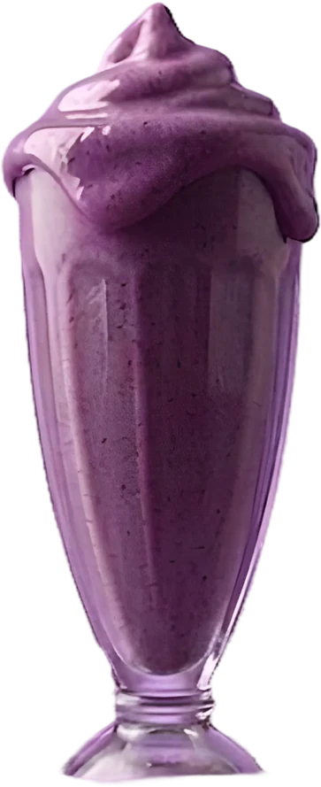
Grape Velvet
グレープ ベルベット
皮ごと潰してます。渋みがちょっと残るくらいが好きなので。
- 果実
- 巨峰 12粒
- ベース
- 自家製ヨーグルト
- 容量
- 250 ml ／ 320 kcal
¥780
02 — The Count
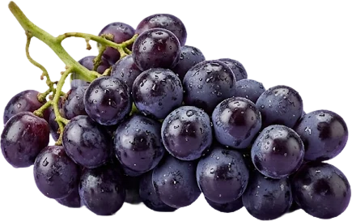
0粒
巨峰 — Grape Velvet
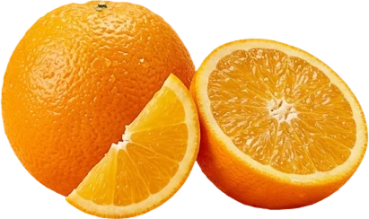
0個分
完熟オレンジ — Orange Glow
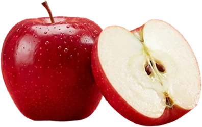
0個分
紅玉りんご — Apple Blush
香料も着色料も保存料も、入れてません。
果物と、氷と、自家製ヨーグルト。原材料は、それだけです。
03 — Our Shakes
季節にあわせてレシピが変わります。そのとき熟れているものを選んでいます。

グレープ ベルベット
皮ごと潰してます。渋みがちょっと残るくらいが好きなので。
¥780
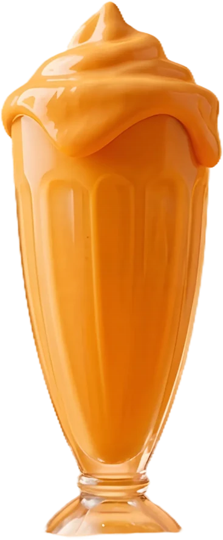
オレンジ グロウ
薄皮ごと入れます。酸っぱさは削らずに、そのまま。
¥740
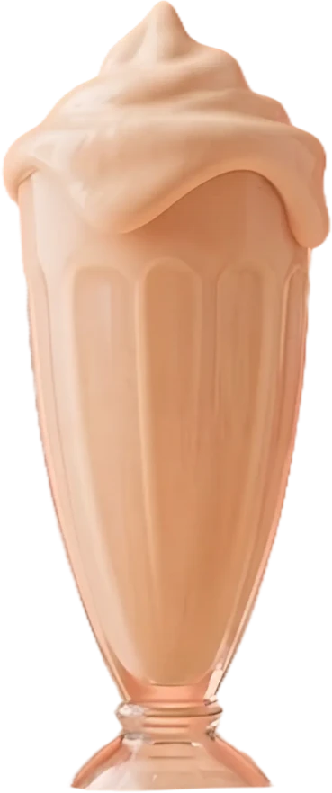
アップル ブラッシュ
紅玉は生のまま。火を通すと香りが飛んじゃうので。
¥760
04 — Layers
混ぜずに、上から重ねていくだけ。だから飲むほど濃くなります。
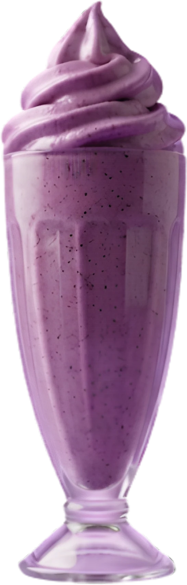
その場で潰します。粒が残ってるのは、わざとです。
24時間発酵、砂糖なし。果物の甘さを受け止める係です。
粗めに砕いた氷。溶けにくいので、最後まで薄まりません。
いちばん底に沈めます。だから最後のひと口がいちばん濃いです。
05 — Promise
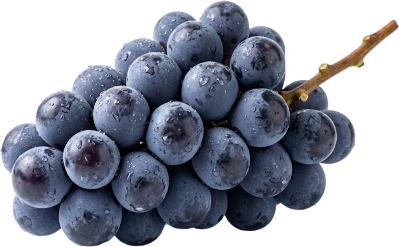
契約農家 12軒
その週に穫れたぶんで作ります。届かない日は、その味はお休みです。
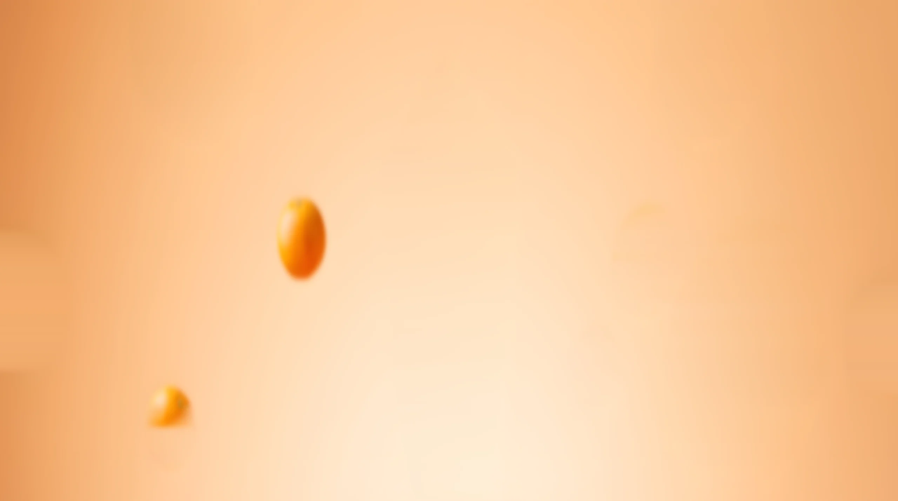
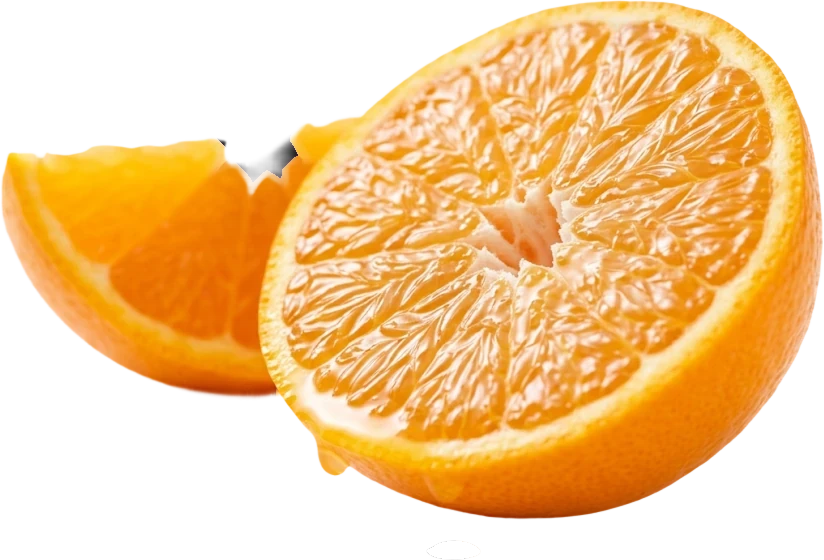
砂糖 0g
甘さは果物の熟れ具合しだいです。だから先週と今週で味が違います。
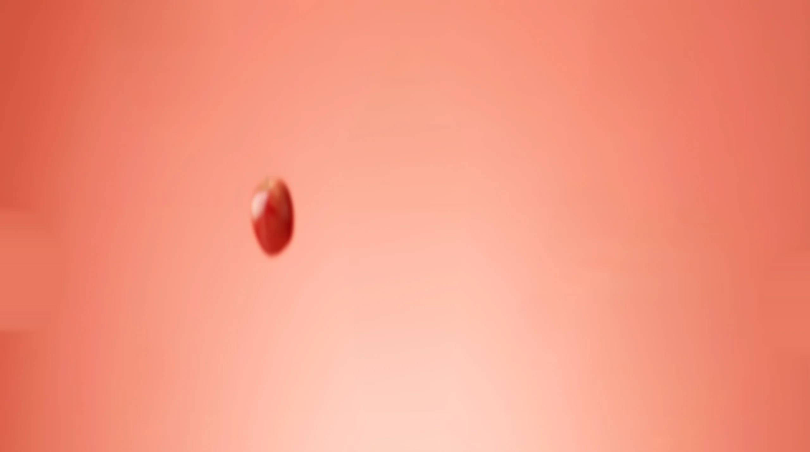
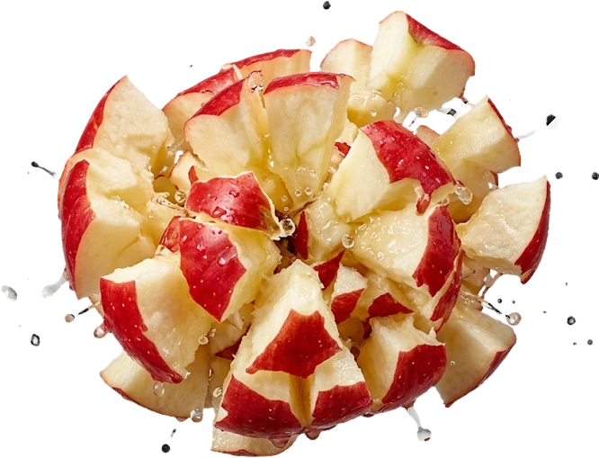
提供まで 30秒
作り置きはしません。注文をもらってから、だいたい30秒お待たせします。
06 — Stores
どの店でも、同じつくり方です。
その日に届いた果物だけなので、売り切れたらおしまい。
東京都目黒区青葉台 1-14-3
東急東横線 中目黒駅から徒歩6分
11:00 – 20:00 ／ 不定休
テイクアウト専門・6坪
大阪府大阪市北区中崎西 2-4-12
大阪メトロ 中崎町駅から徒歩3分
11:00 – 19:00 ／ 火曜定休
イートイン8席・8坪
福岡県福岡市中央区薬院 3-7-8
西鉄天神大牟田線 薬院駅から徒歩5分
11:00 – 19:00 ／ 水曜定休
イートイン4席・6坪
京都府京都市中京区 ／ 準備中
2026年 秋オープン予定